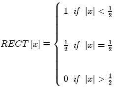

The rectangle function has unit amplitude within its finite support except at the endpoints, where the amplitude is the average of the neighboring amplitudes.

The more general form of the RECT includes parameters for the location of the center of symmetry x0 and of the width b:
Parameters:
Support: 1 (scaled by width parameter)
Area: 1 (scaled by width parameter and amplitude)
Symmetry: even
Read more about the rectangle function at: